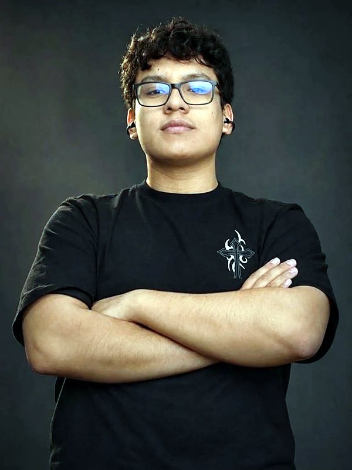

B
Bienestar
Un Centro de Estudiantes que cuide a su comunidad: salud mental, espacios dignos, integración y acompañamiento académico.
Lista 1
> Elecciones CE · EPCC · UNSA · 2027-A – 2028-A
“Construyendo soluciones, BIT a bit”
Vota Lista 1 · vie 27 nov · 08:00 – 14:00
01 · ¿Quiénes somos?
Somos estudiantes de 8.º ciclo de Ciencia de la Computación y conocemos la Escuela desde adentro. Hemos identificado varios puntos en los que podemos mejorar, y queremos ponernos al servicio de los estudiantes para construir juntos soluciones, BIT a bit.
Para lograrlo, trabajaremos en tres áreas clave:
Un Centro de Estudiantes que cuide a su comunidad: salud mental, espacios dignos, integración y acompañamiento académico.
Aprovechar lo que sabemos hacer —tecnología— para resolver problemas reales de la Escuela y abrir oportunidades.
Cuentas claras y comunicación abierta: que cada estudiante sepa qué se hace, cómo y con qué recursos.
02 · Candidatos
Apasionado por la ingeniería de software, la inteligencia artificial, el desarrollo de videojuegos y la ciencia de datos.
Postulo porque quiero contribuir positivamente a nuestra Escuela. Desde el Centro de Estudiantes podemos impulsar actividades por el bienestar académico, personal, social y cultural de todos, desde los primeros años hasta los últimos.
“Hay mucho talento en nuestra Escuela, y quiero que el mundo lo sepa.”

Estudiante de 8vo ciclo de Ciencia de la Computación enfocado en Inteligencia Artificial, Visión por Computadora y accesibilidad, con experiencia en investigación académica y desarrollo de software aplicado. Me interesa fortalecer la conexión entre estudiantes y potenciar los espacios de investigación e integración en nuestra escuela.
03 · Plan de trabajo 2027-A – 2028-A
Más de 25 propuestas organizadas en nuestros tres pilares. Filtra por pilar para explorarlas.
Y muchas más. No nos cerramos: siempre estamos dispuestos a escuchar. ¿Tienes una idea?
Compártela con nosotros04 · Tu voto cuenta
// así marcas tu voto
En la cámara secreta, busca nuestro logo y el número 1. Marca con un aspa (X) o una cruz (+) dentro del recuadro.
Cédula referencial: el diseño oficial lo define el Comité Electoral.
05 · Preguntas frecuentes
Bienestar, Innovación y Transparencia. Y también la unidad mínima de información: creemos que las soluciones se construyen BIT a bit.
Desde el inicio del semestre 2027-A hasta el inicio del semestre 2028-A.
Según las bases, la elección se declara nula y se convoca una nueva. ¡Por eso tu voto es importante!
No. Ambos documentos son obligatorios para votar.
Déjanos tus ideas en nuestro buzón de sugerencias ↗. Tras la elección, la fórmula electa conformará su equipo de trabajo.
06 · Contacto
Comparte tus ideas y sugerencias para mejorar nuestra comunidad, o escríbenos directamente.